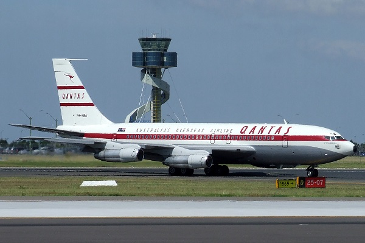

Цікаві факти про Boeing 707
Boeing 707 був одним з перших реактивних лайнерів у світі, які почали використовувати для цивільної авіації і пасажирських перевезень. Він був спроектований
на початку 1950-х років і став єдиним реактивним лайнером першого покоління, який експлуатується в авіації досі. Про це та багато іншого розкажуть цікаві факти
про літак Boeing 707.
Перший політ серійного Boeing 707 відбувся 20 грудня 1954 року народження, а першою авіакомпанією, яка почала експлуатацію літака, стала Pan American World
Airways.
Boeing 707 — перший в світі реактивний літак для пасажирських перевезень, двигуни якого були розташовані в окремих мотогондолах, які перебували під крилами.
Перша серійна модифікація Boeing 707 мала розмах крил 44,2 м. Довжина літака становила 46,61 м, а максимальна злітна маса була на рівні 151 318 кг. Цей літак
міг вміщати 133 пасажирів економічного класу, 14 пасажирів першого класу і 3 члени екіпажу.
Зі збільшенням обсягу пасажирських перевезень Boeing 707 поступився провідним місцем Boeing 747, який став першим в світі далекомагістральним двопалубним
літаком.
У 1970-х роках Boeing 707 практично перестали експлуатувати в розвинених країнах. Останньою країною, що використовує цей літак для пасажирських перевезень,
став Іран (авіакомпанія Saha Air).
На сьогоднішній день Boeing 707 експлуатують в цивільній і військовій авіації в якості вантажного літака.
Літаки типу Boeing 707 фігурували в 194 авіакатастрофах. Таким чином, 19,2% побудованих літаків розбилися.
Найбільша кількість осіб на борту Boeing 707 загинули 3 серпня 1975 року. Літак заходив на посадку, зачепив крилом гору, втратив керування і звалився на землю.
Ця авіакатастрофа сталася біля міста Агадір в Марокко і забрала життя 188 осіб.